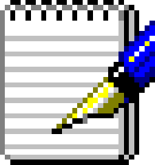
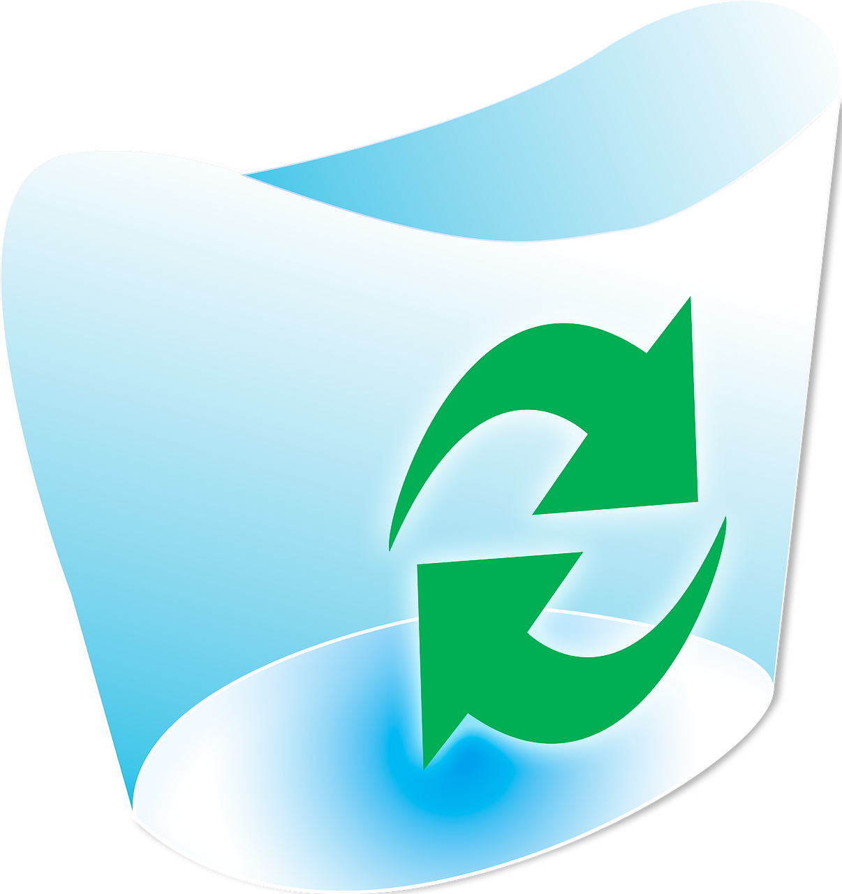
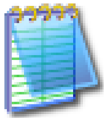
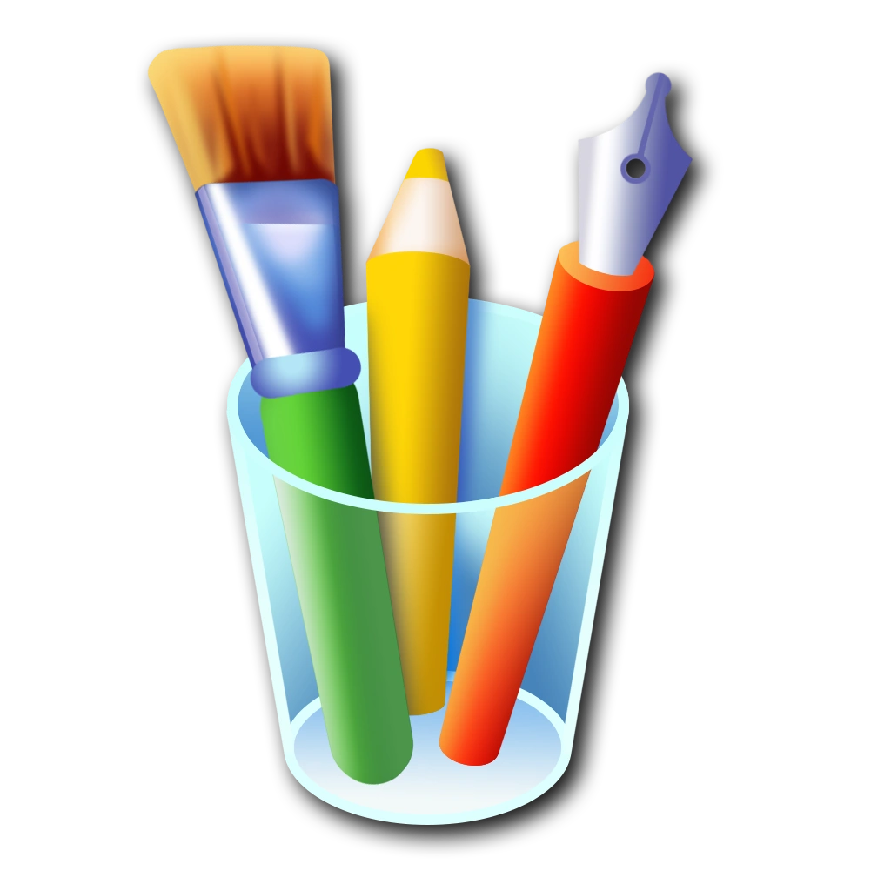

 iCarly.com
1D Blog
Mestre Oficina
Apostila PHP
LinkedIn
iCarly.com
1D Blog
Mestre Oficina
Apostila PHP
LinkedIn
AWARD 2024
Dev em ação!
📷 Clique para ampliar!
ESPECIALISTA BACKEND
★ ★ ★ ★ ★
OTIMIZADO IE 6.0
800×600 PRONTO
VERIFICADO
NORTON APROVADO
Formado em Análise e Desenvolvimento de Sistemas pela Universidade Estácio de Sá e cursando Pós-Graduação em Arquitetura Cloud na Gran Faculdade. Palestrante ativo no PHPSP, PHP Rio e Hack in Rio.
São Paulo, SP · contato@matheusteixeira.com.br
Desenvolvedor back-end com 8+ anos de experiência em PHP, Laravel, MySQL e arquitetura de sistemas. Experiência em liderança técnica, mentoria de times e criação de produtos SaaS do zero. Palestrante em eventos de tecnologia (PHPSP, PHP Rio, Hack in Rio).
Pós-Graduação em Arquitetura Cloud — Gran Faculdade (em andamento)
2010 GRÁTIS!
ANTIVÍRUS 2010
Proteção total GRÁTIS
Baixar Agora →
Navegue com segurança
Baixar Grátis →

Instalei o Baidu PC Faster semana passada achando que era um otimizador de PC igual ao CCleaner, mas esse programa é uma praga. Ele fica abrindo propaganda, mudou minha página inicial do IE pra um site chinês que não entendo nada, e agora tem um ícone vermelho na bandeja do sistema que não sai de jeito nenhum.
Fui no Adicionar/Remover Programas e aparece lá, mas quando clico em desinstalar ele finge que desinstalou e na próxima vez que ligo o computador tá lá de novo! 😡
Alguém sabe como tirar isso de vez? Windows XP SP3.
1. Baixe o HijackThis e rode uma varredura completa.
2. Acesse Iniciar > Executar, digite
msconfig e na
aba Inicializar desmarque tudo relacionado ao Baidu.3. No Regedit, procure por
BaiduHips e
delete as entradas.4. Reinicie e rode o Malwarebytes Anti-Malware (versão gratuita já resolve).
Qualquer dúvida posta aqui!
Segui os passos do MrBitão, fiz o msconfig, deletei as entradas do Regedit e rodei o Malwarebytes. Sumiu tudo! O ícone vermelho saiu da bandeja, a página inicial voltou pro Google e o PC tá bem mais rápido.
Muito obrigado a todos! Vou falar pro meu primo que tem o mesmo problema. NUNCA MAIS instalo nada de site desconhecido. 😅
Nova Iguaçu, RJ
Brasil
| relacionamento: | é complicado |
| aqui para: | amigos, networking |
| sobre mim: | dev por profissão, ser humano normal nas horas vagas. gosto de café, joguinho e ficar até tarde na internet sem motivo nenhum. |
| humor: | sarcástico, irônico, memes |
| moda: | casual, bermuda e chinelo |
| moradia: | sozinho, em São Paulo |
| cidade natal: | Nova Iguaçu, RJ |
| paixões: | café, código, mergulho, moto, cozinhar, uma pessoa que mora longe demais 🇵🇪 |
| esportes: | mergulho, futebol (só assistir) |
| atividades: | programar, cozinhar, andar de moto, fotografia urbana, fazer listas |
| livros: | Guia do Mochileiro das Galáxias |
| música: | pop, MPB, lo-fi, One Direction |
| programas de tv: | Lost, The Office, Friends, BBB, iCarly |
| filmes: | Matrix, Senhor dos Anéis, Tropa de Elite |
| cozinha: | pizza, churrasco, comida peruana 😏 |
| cargo: | Desenvolvedor Back-End Pleno |
| empresa atual: | MUPER — desde 07/2024 |
| projeto próprio: | Mestre Oficina — SaaS para gestão de oficinas mecânicas (Fundador) |
| stack principal: | PHP, Laravel, MySQL, Docker, Python, n8n |
| também mexo com: | React, Vue, Next.js, Node.js, PostgreSQL, MongoDB |
| cloud: | AWS (estudando), Kubernetes (estudando) |
| formação: | ADS — Estácio de Sá (2023) Pós-grad Cloud Computing — Gran (em andamento) |
| experiência: |
SC Brasil (estágio, 2018) → CEBRAT Educação (2019-2020) → BPO Innova Jr → Pleno (2020-2024) → Agilizza (2023-2024) → MUPER (2024-atual) |
| ensino: | Instrutor de PHP e MySQL — SENAC (2023-2024) |
| certificações: | CISCO IT Essentials, Scrum Fundamentals, Cyber Security Foundation |
| comunidade: | Palestrante e participante ativo no PHPSP, PHP Rio e Hack in Rio |
| objetivo: | Continuar evoluindo em arquitetura de software, cloud e liderança técnica |
| nome: | Matheus Teixeira dos Santos |
| idade: | 26 anos |
| nascido em: | Nova Iguaçu, RJ — Baixada Fluminense raiz |
| mora em: | São Paulo, SP — sozinho, montando a vida |
| como começou: | Aos 12 anos viu a Carly fazer um site no iCarly e pensou: "eu quero fazer isso". Mãe deu uma apostila de PHP e MySQL. O resto é história. |
| primeiro projeto: | Blog da banda One Direction — virou um dos maiores do Brasil na época |
| primeiro emprego: | Estagiário da Kris Egidio em 2018. Derrubou o banco de dev no segundo dia. Sobreviveu. |
| mergulho: | Mergulhador. Mar, rios, lagos — onde tiver água e profundidade. |
| moto: | Motoqueiro. Não tem destino, só tem gasolina e vontade. |
| cozinha: | Cozinheiro. Especialidade: improvisar com o que tem na geladeira. |
| fotografia: | Fotógrafo urbano nas horas vagas. São Paulo é um cenário infinito. |
| vício: | Fazer listas. De tudo. Por isso esse perfil é tão detalhado. |
| frase: | "Eu era o pior estagiário do mundo. Agora sou dev." |
oye criança!! ♥ já tô com saudade e faz só 2 dias jaja. quando vc vem pra cá de nuevo?? te espero com ceviche y pisco sour 🇵🇪 te quiero mucho gordito lindo s2 s2
NEM!!! cadê vc que ta sumido?? a Manu ta perguntando do tio, vem almoçar aqui domingo. Mãe vai fazer lasanha. E para de ficar até tarde no pc, vc tem olheira de panda 😤❤️
ESTAGIÁRIO!!! vi que vc tá mexendo com Laravel agora né? lembra quando vc não sabia nem fazer um SELECT e eu te coloquei pra debugar aquele script Python de 800 linhas no teu segundo dia?? kkkkk pior que vc se virou!!! orgulho de vc garoto. qualquer dúvida me chama, tá? sempre. ♥
eae bixa! beleza? mano aquele bug que te falei ontem... era um ponto e vírgula. UM PONTO E VÍRGULA. fiquei 4 horas da minha vida nisso kkkkkkk. bora tomar um açaí amanha? preciso desabafar sobre a vida
15/06/2006
NEM!! vc sabe q eu te amo né?? ♥♥♥
vc é o мєℓнσя тισ que a Manu poderia ter. ela fala "tio Teus" antes mesmo de falar "mamãe" direito kkkkkk
obrigada por tudo... por consertar meu pc, por aguentar meu drama, por buscar remédio da Manu de madrugada aquele dia...
vc é o мєℓнσя ιямãσ ∂σ мυи∂σ тσ∂σ e ngm me convence do contrário!!
тє αмσ мтσσσσ s2 s2 s2
ρяα sємρяє иєм ♥♥♥
:* :* :* вנσσσ
~★~ ¢αяℓα ~★~
10/06/2006
Matheus chegou no estágio em 2018 sem saber quase nada. Eu olhei pra aquele menino e pensei "esse aqui vai me dar trabalho". E deu. MAS DO TIPO BOM kkkkk
No primeiro dia ele derrubou o banco de dev. No segundo dia ele já tava perguntando por que a gente não usava Docker. No terceiro dia ele já tinha refatorado um script meu que tava feio (e tava feio mesmo, não vou mentir 😤).
Eu nunca vi ninguém aprender tão rápido. O moleque absorve tudo como esponja. Eu mostrava um conceito de manhã e de tarde ele já tinha implementado de um jeito que eu não tinha pensado.
Hoje ele tá voando — Laravel, arquitetura, liderando projetos, criando SaaS... e eu fico aqui toda orgulhosa falando "EU QUE ENSINEI" (mentira, ele que correu atrás, eu só apontei a direção).
Matheus, vc é o мєℓнσя dev que já passou pela minha equipe. E olha que já passaram muitos. Nunca para de estudar, nunca para de questionar, e nunca perde essa humildade.
тє α∂мιяσ ∂мαιѕ ♥♥♥
🐍 ~★~ кяιѕ ~★~ 🐍
02/06/2006
♥ ρяα тι, мι cяιαиçα ♥
═══════════════════════
yo no sé cómo decir esto en portugués perfecto... pero voy a intentar jaja
vc apareceu na minha vida do nada e agora eu não consigo imaginar sem vc. vc é a pessoa mais linda, mais engraçada e mais TEIMOSA que eu conheço kkkk
quando vc ri eu esqueço de tudo. quando vc fica bravo parece un gatito enojado jajaja
eu tô contando os dias pra gente se ver de nuevo. cusco tá te esperando, gordito ♥ e EU тαмвéм
тє qυιєяσ мυcнσ мι αмσя ♥♥♥ s2 s2 s2
ρяα sємρяє є мαιѕ υм ρσυqυιиσ ♥
:* :* :* мυcнσѕ вєѕσѕ
~★~ є∂мυи∂σ ~★~ 🇵🇪♥🇧🇷
Histórico
Existe uma diferença entre código que funciona e código que respira. O primeiro resolve o problema de hoje. O segundo conversa com quem vier depois — inclusive com você mesmo, daqui seis meses, às onze da noite, tentando lembrar por que fez assim.
Jobs e Queues no Laravel são documentados. Filas em produção com Redis, workers caindo, jobs duplicados e race conditions — isso a documentação não cobre. Aprendi do jeito difícil.
Você escreve um SELECT que funciona perfeitamente em dev com 500 registros. Em produção com 2 milhões de linhas, o servidor chora. Não é magia negra — é ausência de índice composto no lugar certo.
A maioria dos tutoriais de Docker para PHP param no "docker-compose up". Mas e os volumes, permissionamentos, xdebug e PHP-FPM configurado direito? Este é o setup que uso em todo projeto novo.
 Meus Projetos —
Windows Explorer
Meus Projetos —
Windows Explorer
 Propriedades do Sistema
Propriedades do Sistema
Laravel 11 Hyperthread Enabled
Equivalente a: muita paciência com stack trace
Redis cache ativo · Docker volumes ok
Japeri → Rio de Janeiro, Brasil

Sem título — PaintEaee mano! Viu o site novo? Ficou brabo demais 🔥
Haha obrigado! PHP + XSS nostalgia kkk
Você mandou um nudge! *shake*
Pasta do sistema
Prezados(as) Senhores(as),
Venho por meio desta apresentar-me como Matheus Teixeira dos Santos, desenvolvedor back-end com mais de oito anos de experiência em desenvolvimento de sistemas web, APIs e soluções empresariais.
Atuo com foco em PHP, Laravel, MySQL e arquitetura de software, tendo participado de projetos que vão desde plataformas SaaS até integrações fiscais e sistemas de gestão. Possuo formação em Análise e Desenvolvimento de Sistemas e estou em processo de conclusão da Pós-Graduação em Arquitetura Cloud.
Minha experiência inclui liderança técnica, definição de padrões de código, mentoria de desenvolvedores e participação ativa em decisões de arquitetura. Tenho familiaridade com automações (n8n), containers (Docker), versionamento (Git) e boas práticas de segurança da informação (LGPD, ISO 27001). Além disso, participo da comunidade de desenvolvimento como palestrante em eventos como PHPSP, PHP Rio e Hack in Rio.
Estou à disposição para conversar sobre oportunidades de colaboração, projetos ou vagas que se alinhem ao meu perfil. Currículo completo e portfólio estão disponíveis neste ambiente e em matheusteixeira.com.br.
Atenciosamente,
Matheus Teixeira dos Santos
Desenvolvedor Back-End
contato@matheusteixeira.com.br
São Paulo, SP
 KaZaA_3.2.7_setup.exe eMule_0.50a_installer.exe
KaZaA_3.2.7_setup.exe eMule_0.50a_installer.exe Nero_Burning_ROM_7.exe
Nero_Burning_ROM_7.exe cs_1.6_maps_dust2_pack.zip utorrent_2.2.1.exe WindowsXP_Royale_Noir_theme.zip Ares_Galaxy_2.1.7.exe Internet_Download_Manager_5.18.exe limewire_pro_CRACK_GRATIS.exe
cs_1.6_maps_dust2_pack.zip utorrent_2.2.1.exe WindowsXP_Royale_Noir_theme.zip Ares_Galaxy_2.1.7.exe Internet_Download_Manager_5.18.exe limewire_pro_CRACK_GRATIS.exe foto_edmundo_praia.jpg docker_desktop_installer.exe laravel_11_docs_offline.zip
Projetos de Desenvolvimento — Windows Explorer
foto_edmundo_praia.jpg docker_desktop_installer.exe laravel_11_docs_offline.zip
Projetos de Desenvolvimento — Windows Explorer
Construir uma plataforma SaaS que resolva um problema real, gere receita recorrente e me permita finalmente ter uma renda passiva enquanto eu mergulho em Noronha. O produto precisa ser: (a) algo que eu entenda, (b) algo que clientes paguem sem reclamar, (c) algo que eu consiga manter sozinho sem surtar às 3h da manhã toda semana.
| Produto | Potencial | Esforço | Status |
|---|---|---|---|
| 🔧 Mestre Oficina | ⭐⭐⭐⭐ | ⭐⭐⭐⭐⭐ | Em andamento |
| 🤖 Recepti (clínicas) | ⭐⭐⭐⭐⭐ | ⭐⭐⭐ | MVP feito |
| 📊 Analytics p/ PME | ⭐⭐⭐ | ⭐⭐⭐⭐ | Ideia |
| 🐘 Laravel Boilerplate SaaS | ⭐⭐⭐ | ⭐⭐ | Ideia |
Mês 1–3: R$ 0 (isso é realidade, não pessimismo)
Mês 4–6: R$ 500–1.500/mês (primeiros clientes, primeiros bugs em produção)
Mês 7–12: R$ 3.000–8.000/mês (se o churn não matar antes)
Ano 2: R$ 15.000/mês (palco da minha palestra no PHP Conference BR 🎤)
Ano 3: Noronha, trabalho remoto, café de qualidade. A meta.
⚠ Eu trabalhar nele só nos fins de semana e nunca terminar
⚠ Concorrente fazer algo igual com mais marketing
⚠ Eu refatorar tudo do zero quando "quase pronto" (padrão histórico confirmado)
⚠ Scope creep — adicionar feature nova antes de terminar as anteriores (esse já tá acontecendo)
⚠ Me empolgar com novo framework e querer reescrever em Go/Rust/etc
[x] Definir o produto
[x] Criar MVP funcional
[ ] Conseguir primeiro cliente pagante
[ ] NÃO refatorar tudo antes do primeiro cliente
[ ] Criar landing page que preste
[ ] Dormir mais de 6h por noite durante o processo
Nota do autor: esse é o 7º rascunho desse plano. Os seis anteriores foram deletados porque ficaram ou muito ambiciosos demais ou muito realistas demais. Esse aqui é o equilíbrio perfeito entre "dá pra fazer" e "quero acreditar que dá pra fazer". — Matheus, 02h23 de uma terça-feira qualquer
1 2 3 4 5 6 7 8 9 10 11 12 13 14 15 16 17 18 19 20 21 22 23 24 25 26 27 28 29 30 31 32 33 34 35 36 37 38 39 40 41 42 43 44 45 46 47 48 49 50
# site-pessoal-xp # Portfólio pessoal — Windows XP Edition # Porque fazer um site comum é pra quem não tem criatividade. ## Sobre Site de portfólio que simula o ambiente Windows XP no browser. Feito com HTML, CSS e JS puro. Sem frameworks. Sem npm install. Sem `node_modules` de 300 MB. Glorioso. ## Funcionalidades - Boot screen com barra de progresso animada - Welcome screen estilo XP - Desktop com ícones arrastáveis - Janelas com drag, resize, minimize, maximize - Taskbar com clock, system tray, quick launch - Start Menu funcional - Internet Explorer com site em estilo anos 2000 - Windows Media Player com playlist real - MSN Messenger com conversas automáticas - MS Paint funcional (canvas) - Campo Minado completo - Calculadora XP - Bloco de Notas com save em localStorage - Notepad++ mostrando o código-fonte desse site - Meus Documentos com pasta completa de arquivos ## Como rodar ```bash # Abrir o index.html no browser. # Isso é tudo. Sério. open index.html ``` ## Tecnologias - HTML5 · CSS3 · JavaScript vanilla - Web Audio API (sons do sistema) - Canvas API (Paint + WMP visualizer) - localStorage (Bloco de Notas) - Zero dependencies ✅ ## Autor Matheus Teixeira — matheusteixeira.com.br
1 2 3 4 5 6 7 8 9 10 11 12 13 14 15 16 17 18 19 20 21 22 23 24 25 26 27 28 29 30 31 32 33 34 35 36 37 38 39 40 41 42 43 44 45 46 47 48 49 50 51 52 53 54 55 56 57 58 59 60
# docker-compose.yml — ambiente local de desenvolvimento # Matheus Teixeira · use com docker compose up -d version: '3.9' services: app: build: context: . dockerfile: Dockerfile container_name: app working_dir: /var/www volumes: - .:/var/www ports: - "8000:80" depends_on: - db - redis environment: - APP_ENV=local - APP_KEY=base64:TROCAR_ISSO_NAO_COMMITAR - DB_HOST=db - REDIS_HOST=redis db: image: mysql:8.2 container_name: mysql restart: unless-stopped ports: - "3306:3306" environment: MYSQL_ROOT_PASSWORD: root_mudar_em_prod MYSQL_DATABASE: app_db MYSQL_USER: app MYSQL_PASSWORD: app_mudar_em_prod volumes: - mysql_data:/var/lib/mysql redis: image: redis:7-alpine container_name: redis restart: unless-stopped ports: - "6379:6379" mailhog: image: mailhog/mailhog container_name: mailhog ports: - "8025:8025" volumes: mysql_data: driver: local # lembrar: nunca commitar .env com credenciais reais # (sim, já fiz isso antes. não pergunta.)


 Fazer logoff
Fazer logoff Desligar computador
Desligar computador